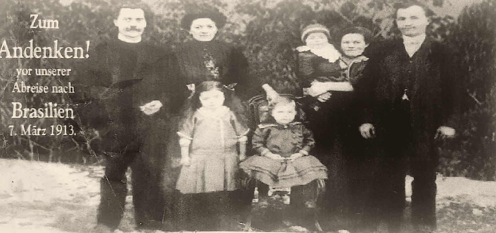
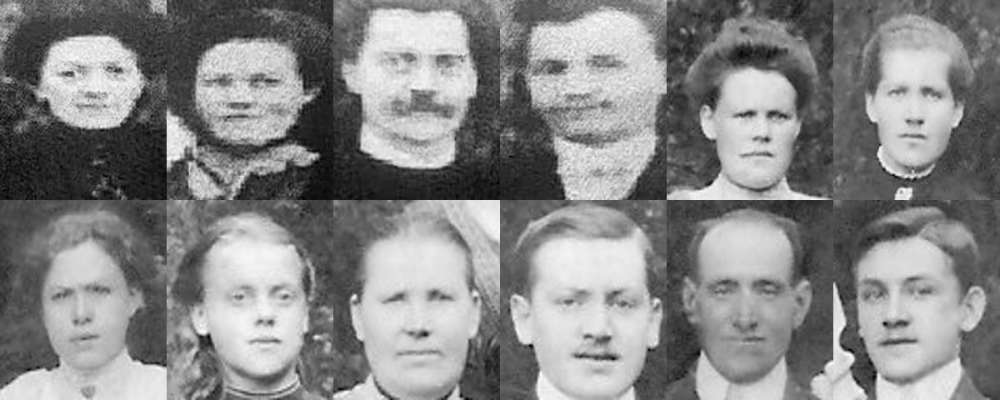
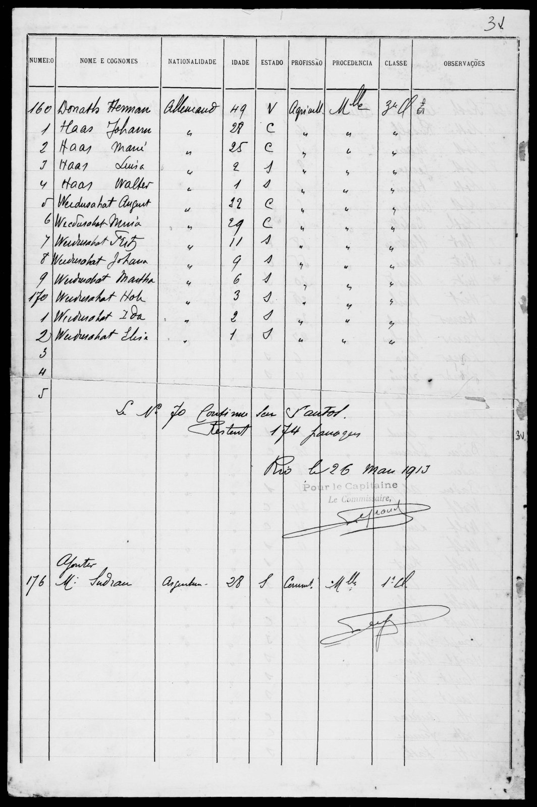
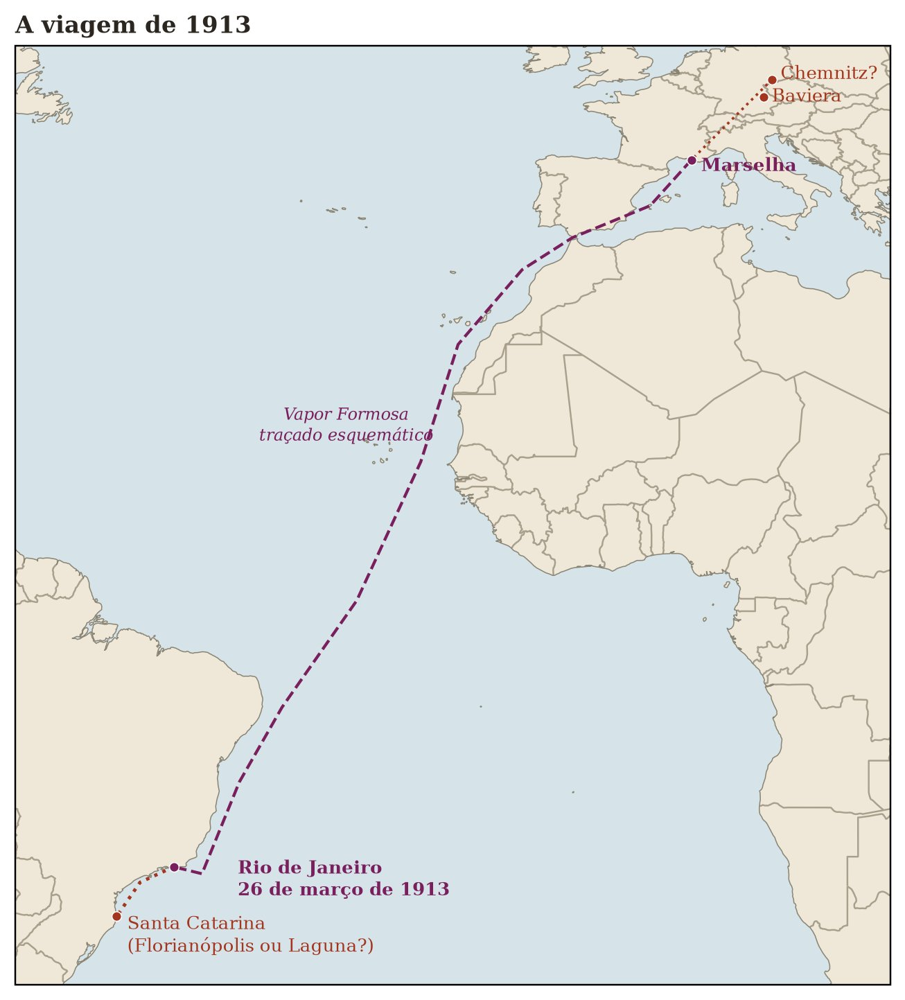

Teil II · Der Dampfer Formosa und der Urwald
Kapitel 5 — März 1913: Von Marseille nach Rio de Janeiro
43,3° N · 5,4° O, Marseille · 22,9° S · 43,2° W, Rio de Janeiro
Ein Fluss vergisst den Weg zum Meer nicht. Familien vergessen ihn manchmal; Papiere fast nie.
Zum Andenken!
Auf dem Abschiedsfoto sind sieben Menschen. Auf der Schiffsliste vier.
Das Foto ist kaum größer als eine Handfläche, und unsere Kopie ist die Reproduktion einer Reproduktion, körnig, mit zugelaufenen Schatten. Trotzdem gehört es zu den wichtigsten Bildern dieses Buches. Am linken Rand hat jemand in weißen Buchstaben auf den dunklen Hintergrund aus Sträuchern drucken lassen: Zum Andenken! vor unserer Abreise nach Brasilien, 7. März 1913.

Sieben Menschen stehen auf dem Bild, auf hellem Boden: festgetretene Erde, vielleicht alter Schnee, das ist nicht zu sagen. Links ein Mann mit Schnurrbart in dunkler Kleidung, die Hände vor dem Körper gefaltet. Neben ihm eine Frau mit hochgestecktem Haar, ebenfalls in Dunkel. Rechts eine Frau, die ein Baby mit Häubchen auf dem Arm hält, und neben ihr ein junger Mann ohne Schnurrbart in zugeknöpfter Jacke. Zwischen den Erwachsenen zwei Kinder: ein stehendes Mädchen in hellem Kleid mit einer Schleife im Haar und ein kleineres Kind, das in einem Rüschenkleid auf einem Korbstühlchen sitzt.
Ich habe lange auf dieses Bild geschaut, und jahrelang hat es mir mehr Fragen als Antworten gegeben. Entschlüsselt hat es das Gedächtnis der Familie: Die Frau mit dem Baby auf dem Arm ist die Mota, und der junge Mann ohne Schnurrbart neben ihr ist der Fata. Johann war achtundzwanzig, Maria vierundzwanzig. Das Baby mit dem Häubchen muss Walter sein, ein Jahr alt, wie die Passagierliste sagt. Luisa, zwei Jahre alt, ist eines der beiden Kinder in der Mitte, das stehende Mädchen oder das Kind auf dem Korbstühlchen. Das andere Kind gehört also nicht zu ihnen, und das Paar links, der Mann mit Schnurrbart und die Frau mit dem hochgesteckten Haar, sind die Verwandten, die zurückblieben.
Wer waren sie? Das ist die Frage, die mich jetzt nicht mehr loslässt. Eine Schwester der Mota mit ihrem Mann und einem kleinen Kind, oder ein Bruder des Fata mit seiner Frau? 1971 schrieb eine Schwester der Mota aus Rempesgrün, sie habe den Abschied am Bahnhof nie vergessen, als sie die Schwester zum letzten Mal sah (Kapitel 7). War sie die Frau links, zwei Schritte von ihrer Schwester entfernt, wenige Tage vor dem Zug?
Eine Frage, die ich mir oft gestellt habe, ist, ob das Foto nicht in Marseille aufgenommen wurde, am Kai, am Tag vor der Einschiffung. Der Kalender ließe es zu: Die Formosa kam am 26. März in Rio an, und die Überfahrt dauerte etwas mehr als zwei Wochen, das Schiff muss also um den 8. bis 10. März ausgelaufen sein. Das Foto selbst zieht aber in die andere Richtung. Der Boden ist weiß, von Schnee oder Reif, was in Marseille im März selten ist, und im Hintergrund stehen Kiefern- und Tannensträucher wie in den Wäldern Sachsens und der Oberpfalz. Die Inschrift sagt vor unserer Abreise, und sie war für die bestimmt, die blieben. Dafür musste man entwickeln, Abzüge machen und sie übergeben, und ein Auswanderer der dritten Klasse auf der Durchreise in Marseille hätte dafür weder Zeit noch Geld gehabt. Am wahrscheinlichsten ist das Foto in Deutschland entstanden, in den letzten Tagen zu Hause. Und dieses Zuhause lag, wie ich meine, im Vogtland: derselbe Fichtenhintergrund wie auf dem Hochzeitsfoto und dem Familienfoto im Wäldchen (Kapitel 4), dieselbe höher gelegene, kältere Gegend, in der die Schwestern der Mota lebten und in der Anfang März noch Schnee lag.
Die Familie der Mota ist auf einem anderen Foto festgehalten, dem aus Kapitel 4, aufgenommen in einem Wäldchen, mit einem älteren Paar in der Mitte und jungen Leuten und Kindern ringsum. Ich habe die Gesichter der beiden Fotos nebeneinandergestellt.

Ich kann mit diesen Bildern nichts behaupten, und ich misstraue jedem, der es tut. Die Kopie von 1913 ist so körnig, dass ein Gesicht zu einem hellen Fleck mit zwei dunklen Punkten wird. Trotzdem: Schaut in Ruhe hin. Der Mann mit Schnurrbart von 1913 hat dieselbe Gesichtsform wie der Mann mit Schnurrbart, der auf dem Foto aus dem Wäldchen links sitzt. Wenn es derselbe Mann ist, war er auf beiden Fotos der Familie der Mota: sehr wahrscheinlich ein Schwiegersohn der Meiers, verheiratet mit einer der Schwestern. Dann wäre die Frau links auf dem Bild von 1913 diese Schwester. Auch der junge Mann, der auf dem Foto aus dem Wäldchen rechts sitzt, erinnert an den Fata von 1913. Das ältere Paar wären Georg Adam und Franziska, beide um die fünfzig, und der Junge mit Krawatte, etwa acht Jahre alt und lange nach 1892 geboren, könnte der Karl aus den Briefen sein. Das sind viele „Wenn“. Das überlasse ich euch, und den Verwandten in Rempesgrün, falls sie diese Fotos eines Tages mit uns ansehen.
Was das Foto ohne jede Zweideutigkeit aussagt, sind das Datum und die Absicht. Am 7. März 1913 wusste jemand, dass er nach Brasilien aufbrechen würde, und wollte, dass die Zurückbleibenden eine Erinnerung hatten. Im Wort Andenken steckt denken: Es ist das, was einen an jemanden denken lässt. Das Foto war dafür gemacht, von denen angeschaut zu werden, die blieben. Es ist eine schöne Ironie, dass es den Ozean überquert hat und zu uns gelangt ist, zu denen, die gingen.
Zeilen 161 bis 164
Marseille, März 1913
Die meisten deutschen Auswanderer fuhren von Hamburg oder Bremen ab, den großen Nordseehäfen. Die Haas fuhren von Marseille ab. Die Erklärung, die ich von meinem Vater hörte, lautet: 1913 habe die deutsche Regierung in Erwartung des Krieges die Auswanderung verboten, und deshalb sei die Familie über einen Hafen außerhalb Deutschlands ausgereist. Johann war 28, im wehrpflichtigen Alter. Das Gesetz, das dies bestätigt, habe ich noch nicht gefunden, und ich muss herausfinden, ob es ein allgemeines Verbot gab oder Beschränkungen für Männer im wehrfähigen Alter. Andere Gründe können mitgespielt haben: eine billigere Überfahrt bei einer französischen Reederei oder ein Auswanderungsagent, der mit den Mittelmeerschiffen zusammenarbeitete.
Die Geschichte hat eine Folge für euch. Weil sie auf diese Weise ausgereist war, hielt die Familie es für unmöglich, die deutsche Staatsangehörigkeit zu bekommen. Nur hat der Fata die seine nie aufgegeben. Er lebte in Brasilien als Ausländer und ging von Zeit zu Zeit zur Polícia Federal, der Bundespolizei, bei der sich Ausländer melden mussten, um sich registrieren zu lassen. Wenn die Papiere das bestätigen, kann die Staatsangehörigkeit vom Vater auf den Sohn bis zu euch weitergegeben worden sein. Ich bin kein Anwalt: Die Antwort hängt von den deutschen Gesetzen der damaligen Zeit und von den Dokumenten ab, und entscheiden wird die deutsche Behörde. Aber es ist eine Tür, die offen sein könnte, und der Fata selbst hat sie so hinterlassen.
Ich stelle mir die Zugfahrt vor: von Bayern nach Südwesten, über die französische Grenze, das Rhonetal hinunter. Ich stelle mir den Moment vor, in dem sich die Luft veränderte. Wer Anfang März aus dem kontinentalen bayerischen Winter kommt und Marseille erreicht, findet eine andere Welt: Mittelmeerlicht, Olivenbäume und vielleicht den Mistral, den kalten, trockenen Wind, der das Rhonetal herabweht und in Böen über den Hafen fegt. Die Urgroßeltern tauschten den Böhmischen Wind gegen den Mistral, und bald würden sie den Mistral gegen die Passatwinde tauschen. So zeichne ich, aus Berufsgewohnheit, ihre Route als eine Folge von Winden.
Im Hafen der Dampfer Formosa. Und an Bord eine Liste.

Archivkarte: Passagierliste des Dampfers Formosa aus Marseille, vorgelegt in Rio de Janeiro. Blatt Nummer 31. Gedruckte Spaltenköpfe auf Portugiesisch (Numero, Nome e Cognomes, Nationalidade, Idade, Estado, Profissão, Procedencia, Classe, Observações), handschriftlich auf Französisch ausgefüllt. Zeilen 161 bis 164: Haas Johann, 28, C (verheiratet); Haas Marie, 25, C; Haas Luisa, 2, S (ledig); Haas Walter, 1, S. Staatsangehörigkeit Allemand, Beruf Agricult., Herkunft Mlle (Marseille) und 3e Cl. (dritte Klasse), alles ab Zeile 160 durch Wiederholungszeichen angegeben. Vermerk unten: „Le Nº 70 continue sur Santos. Restent 174 passagers.“ Datum und Unterschrift: „Rio, le 26 Mars 1913. Pour le Capitaine, Le Commissaire“. Bild: imagens/doc_haas_navio_formosa_1913.jpg.
Als ich dieses Dokument zum ersten Mal sah, war das Gefühl ähnlich, wie wenn man in einer Datenreihe, die man für verloren hielt, eine saubere Beobachtung findet, mit Uhrzeit und Koordinate. Bis dahin hatten wir von der Reise 1913 nur mündliche Erinnerung, viele Male weitererzählt. Plötzlich gab es ein Papier, geschrieben von jemandem außerhalb der Familie, im selben Jahr, und es sagte: Sie waren hier.
Das Papier sagt Dinge, die die Erinnerung nicht sagte. Es sagt, dass Johann sich als agriculteur, als Landwirt, angab und nicht als Stuckateur, was völlig einleuchtet, denn Brasilien wollte Siedler für den Ackerbau, nicht städtische Handwerker, und wahrscheinlich hatte der Auswanderungsagent allen geraten, sich so einzutragen. Es sagt, dass Maria fünfundzwanzig war, während sie im März 1913 in Wahrheit noch vierundzwanzig war: Fünfundzwanzig wurde sie erst am 7. April, schon auf der brasilianischen Seite des Ozeans. Ein kleiner Unterschied, von der Art, die am Schalter aufgerundet wird. Es sagt, dass sie dritter Klasse reisten, wie fast alle Auswanderer. Und es sagt ohne jede Zweideutigkeit, dass Luisa, zwei Jahre alt, und Walter, ein Jahr alt, an Bord waren.
Weiter unten auf demselben Blatt steht eine ganze Familie mit schwer lesbarem Nachnamen (etwa Weidushat), Vater, Mutter und sechs Kinder von elf Jahren abwärts. Ich denke an die Gespräche in der dritten Klasse zwischen Maria und jener anderen Mutter mit sechs Kindern. Ich weiß nichts über sie. Ich weiß, dass sie sich dieselbe Seite teilten und wahrscheinlich dasselbe Zwischendeck.
Wie die Überfahrt war, weiß ich auch nicht. Siebzehn oder achtzehn Tage vielleicht, von Marseille nach Rio: das Mittelmeer, die Straße von Gibraltar, die afrikanische Küste, die äquatorialen Kalmen, der Südostpassat. Für eine Frau, die vielleicht schwanger war und sich im Zwischendeck der dritten Klasse um ein einjähriges Kind und ein zweijähriges Mädchen kümmerte, war wohl jeder dieser Tage lang. Ich werde keine Stürme erfinden. Die Reanalyse für 1913 ist zu grob, um mir zu sagen, was die Formosa erlebt hat, und mir ist ehrliches Schweigen lieber als erfundenes Drama.
Ich weiß, dass sie am 26. März in Rio ankamen. Das Manifest sagt es.

Was das Papier sagt und was es nicht sagt
Rio de Janeiro, 26. März 1913
Viele Jahre lang erzählte die Familie die Ankunft nur auf eine Weise. Der Jubiläumstext, den Marise 2013 schrieb, hielt diese Fassung fest: Die Ausschiffung in Rio sei verweigert worden, das Schiff sei von Hafen zu Hafen die Küste entlanggefahren und habe Quarantäne gehalten, mit zu vielen Menschen, schlechtem Essen und „unzähligen Todesfällen“ an Bord, bis die Familie erschöpft in Laguna an Land ging.
Ich muss euch gegenüber deutlich sein, denn die ersten Fassungen dieses Buches stützten sich zu sehr auf diesen Text. Er wurde hundert Jahre nach den Ereignissen geschrieben, aus Erinnerungen aus dritter und vierter Hand, um auf einem Fest vorgelesen zu werden. Er hat das große Verdienst, zusammengetragen zu haben, was die Familie wusste. Aber wo er sich mit Dokumenten vergleichen lässt, irrt er häufig. Deshalb ist die Regel dieses Buches einfach: Wenn das zeitgenössische Papier und die Überlieferung sich widersprechen, halte ich mich an das Papier, und die Überlieferung wird zur Frage, nicht zur Antwort.
Das zeitgenössische Papier ist in diesem Punkt die Liste der Formosa. Sie wurde am 26. März 1913 in Rio de Janeiro vom Zahlmeister des Schiffes unterschrieben, um den brasilianischen Behörden übergeben zu werden. Darin stehen lebend, in den Zeilen 161 bis 164, die vier Haas: Johann, Marie, Luisa und Walter. Niemand aus der Familie ist auf der Überfahrt gestorben. Die Spalte für Bemerkungen, in die ein Todesfall an Bord eingetragen worden wäre, ist leer. Der Vermerk unten auf der Seite („Le Nº 70 continue sur Santos. Restent 174 passagers“) besagt, dass ein Passagier nach Santos weiterfuhr und die übrigen blieben. Rio war der Ankunftshafen der Familie. Kein Dokument, das ich gesehen habe, spricht von einer verweigerten Ausschiffung, von einem Schiff, das die Küste entlangirrte, oder von Toten an Bord.
Was das Papier nicht sagt, ist, was danach kam. Die Neuankömmlinge durchliefen in der Regel die Einwandererherberge auf der Ilha das Flores in der Guanabara-Bucht und wurden von dort in die Zielstaaten weitergeschickt. Die Register der Ilha das Flores und der Einwanderungsinspektion, die im brasilianischen Nationalarchiv (Arquivo Nacional) liegen, müssten sagen, wann die Haas Rio verließen, auf welchem Schiff und in welchen Hafen von Santa Catarina. Es kann Florianópolis gewesen sein, wo Vetter Agenor gesucht hat, ohne etwas zu finden, oder Laguna, wie die Überlieferung sagt. Solange diese Bücher nicht aufgeschlagen sind, weiß ich es nicht. Und ich werde die Lücke nicht mit Quarantänen und Stürmen füllen.
Gertrudes
Dasselbe gilt für die Geburt von Gertrudes. Die Überlieferung sagt, sie sei am 5. Mai 1913 in der Einwandererbaracke von Laguna geboren, dem Barracão dos Imigrantes. Die Tabelle von Vetter Agenor sagt, sie sei am 22. Oktober 1911 in Deutschland geboren und mit dem Schiff gekommen. Das Manifest führt keine Gertrudes an Bord, und schon das machte das Datum 1911 schwer haltbar: Ein sechzehn Monate altes Mädchen stünde auf der Liste, so wie die einjährigen Kinder auf derselben Seite.
Das fehlende Papier tauchte in den Indizes der katholischen Kirchenbücher von Santa Catarina auf. Gertrud, Tochter von Johann Haas und Maria Meyer, wurde am 23. November 1913 in der Pfarrei Teresópolis getauft, heute Águas Mornas, die die Kolonie Anitápolis betreute. Ihr Profil bei FamilySearch gibt als Geburt den 5. Mai 1913 in Anitápolis an. Das Datum der Überlieferung stimmte; der Ort wahrscheinlich nicht. Gertrudes wurde etwa sechs Wochen nach der Ankunft in Rio geboren, Maria reiste also schwanger, wie die Familie es immer erzählt hat. Gertrudes wuchs heran, heiratete im Mai 1932 in Ituporanga Augusto Sebold, einen Sohn von Siedlern aus Teresópolis, und ging mit ihm in den Norden von Paraná. Sie starb am 23. Juni 1997 in Pindauvinha, Gemeinde Ivaiporã.
Archivkarte: Taufe von Gertrud Haas, Tochter von Johann Haas und Maria Meyer, am 23.11.1913, Pfarrei Teresópolis (SC): „Brasil, Santa Catarina, Registros da Igreja Católica, 1714–1977“, FamilySearch, ark:/61903/1:1:QPQC-X62B. Heirat mit Augusto Sebold: kirchlich am 07.05.1932 und standesamtlich am 09.05.1932, Ituporanga („Brasil, Santa Catarina, Registro Civil, 1850–1999“, ark:/61903/1:1:X9B4-G1T4). Geburtsdatum (05.05.1913, Anitápolis) und Sterbedatum (23.06.1997, Pindauvinha, Ivaiporã, PR) stammen aus dem Profil G8P8-X9D, bisher ohne beigefügte Urkunde.
Wo Luisa und Walter sind
Auch über die beiden Kinder der Formosa hat sich die schriftliche Überlieferung geirrt. Der Jubiläumstext sagt, Luisa und Walter seien noch in den Baracken gestorben, geschwächt von der Reise. Agenors Tabelle verzeichnet jedoch zwei Kinder, „Lina“ und „Valter“, begraben in Rio do Ouro, Anitápolis, dem Ort, an den die Familie nach der Ankunft zog. Und es gibt einen Zeugen, den ich mit eigenen Ohren gehört habe: meinen Vater.
Baldoíno erzählte mir, er sei mit seinen Geschwistern nach Anitápolis gefahren, um die sterblichen Überreste der kleinen Geschwister zu holen und nach Ituporanga zu bringen. Auf dieser Reise, oben im Gebirge, sah er zum ersten Mal Schnee. Walter liegt heute in Ituporanga begraben, bei der Familie. Die Kinder haben die Reise also überlebt, sind in Rio do Ouro angekommen und dort gestorben. Jahre später holten die Geschwister sie.
„Lina“ ist sehr wahrscheinlich die Luisa der Bordliste, unter ihrem Rufnamen im Haus; „Valter“ ist Walter in brasilianischer Schreibweise. Ich kenne noch nicht die Sterbedaten, nicht das Jahr der Umbettung und nicht den Winter, in dem es im Gebirge schneite, sodass mein Vater den Schnee sehen konnte. Aber die Geschichte steht jetzt auf drei Beinen: einem Papier von Bord, einer sorgfältig angelegten Tabelle und dem Bericht dessen, der die Überreste getragen hat. Sie hängt nicht mehr an einem Satz, der für ein Fest geschrieben wurde.
Der Rest bleibt offen. Das Abreisedatum, das Agenor notiert hat, der 13. März, passt weder zum Foto vom 7. März noch zur Ankunft in Rio am 26. Das Foto kann den Abschied zu Hause markieren und nicht die Einschiffung in Marseille; die Zugfahrt bis Frankreich dauerte Tage. Der 26. April, ebenfalls von ihm notiert, liegt genau einen Monat nach der Ankunft in Rio: Das kann die Ankunft in Santa Catarina sein, nach Herberge und Küstenschiff, oder ein bloßer Irrtum im Monat. Die Taufe von Gertrudes in Teresópolis legt nahe, dass die Familie über Florianópolis, Palhoça und Teresópolis nach Anitápolis hinaufzog und nicht über Laguna; aber die Liste des Küstenschiffs ist noch nicht gefunden. Diese Fragen sind am Ende dieses Buches einzeln aufgeführt, für alle, die suchen möchten.
Laguna, Februar 2012
Im Februar 2012 fuhren wir nach Laguna und Tubarão: ich, Bárbara, Matheus und Lucas. Matheus war neun; Lucas wurde bald sieben. Sie waren nicht viel älter als Luisa und Walter, als die beiden den Ozean überquerten.
Damals hatte ich das Manifest der Formosa noch nicht und wusste nichts von all diesen Widersprüchen. Ich wusste, was die Familie wiederholte: dass der Fata und die Mota über Laguna gekommen waren und dass dort die ersten Gräber der Familie in Brasilien lagen. Heute weiß ich, dass der zweite Teil falsch ist, denn die Gräber waren in Anitápolis, und dass der erste noch auf ein Dokument wartet. Aber wir sahen uns die Stadt mit diesem Gedanken im Kopf an.
Laguna ist eine der ältesten Städte Santa Catarinas, gegründet im 17. Jahrhundert. Die Altstadt hat portugiesische Kolonialhäuser, die Hauptkirche Santo Antônio dos Anjos und enge Gassen, die zur Lagune hinabführen. Es war die Heimat von Anita Garibaldi und der Schauplatz der kurzlebigen Julianischen Republik von 1839. Es ist auch die Stadt der Delfine, die seit Generationen die Schwärme von Meeräschen auf die Wurfnetze der Fischer an der Hafeneinfahrt zutreiben, eine Zusammenarbeit zwischen Arten, die Biologen bis heute erforschen. Vor allem ist es eine Stadt, die um eine Wasserpassage herum gebaut ist: die Barra, die Durchfahrt, die das Lagunensystem mit dem Ozean verbindet und durch die die Schiffe ein- und ausfuhren.
Wenn die Urgroßeltern dort hereinkamen, haben sie keine Spur hinterlassen. Es gibt keine Tafel, keinen Eintrag am Kai, keine Gedenkstätte für die Einwandererbaracke, jedenfalls keine, die ich gefunden hätte. Es gibt nur die Barra und das Wasser, das mit den Gezeiten ein- und ausströmt.
In Tubarão, ein paar Dutzend Kilometer flussaufwärts, sahen wir uns die Sammlung von Willy Zumblick an, dem Maler der Stadt, der einen guten Teil seines Lebens der Darstellung der Geschichte des südlichen Santa Catarina widmete: Anita, Garibaldi, die Lastkähne der Julianischen Republik, die Küstenlandschaft. Ich mag Historienmaler aus demselben Grund, aus dem ich Reanalysen mag: Sie rekonstruieren, was niemand fotografiert hat, und wissen, dass sie rekonstruieren.
Den Rest dieser Reise überlasse ich den Jungen und Bárbara, die ihre eigenen Erinnerungen daran haben. Meine, die für dieses Buch zählt, ist das Bild eines Geographen: Laguna liegt an der Mündung eines Flusses. Der Fluss ist der Tubarão.
Der Fluss, der zur Barra hinabfließt
Wer vom Meer her nach Laguna kommt, sieht den Tubarão nicht. Er mündet hinter der Stadt in das Lagunensystem, nachdem er von der Serra Geral herabgekommen ist, die Stadt Tubarão durchquert und sich durch die Küstenebene geschlängelt hat. Das Wasser, das durch die Barra von Laguna hinausströmt, ist zu einem guten Teil Regen, der im Gebirge gefallen ist.
Im März 1974 kam dieses Wasser auf einmal herunter.
Am 24. und 25. März 1974 verwüstete ein Hochwasser die Stadt Tubarão. Es war die bis dahin größte Naturkatastrophe in der Geschichte Santa Catarinas. Die meistzitierten offiziellen Zahlen sprechen von etwa zweihundert Toten und Zehntausenden Obdachlosen. Ganze Stadtviertel standen unter Wasser; die Stadt brauchte Jahre, um sich zu erholen. Nach der Tragödie wurde der Fluss im Stadtgebiet begradigt und kanalisiert: Die Schleifen, die das Wasser über Jahrtausende gezeichnet hatte, wurden von Ingenieuren durchschnitten, die das mit gutem Grund nicht noch einmal erleben wollten.
Ich war im März 1974 acht Jahre alt. Ich dachte noch nicht daran, Meteorologe zu werden. Wenn ich heute auf dieses Ereignis schaue, sehe ich, was mein Beruf mich zu sehen gelehrt hat: ein Einzugsgebiet, das an steilen Abbruchkanten entspringt, Steigungsregen empfängt, wenn feuchte Meeresluft gegen das Gebirge gedrückt wird, dieses Wasser in wenigen Stunden sammelt und in eine tief liegende Ebene schüttet, wo es nirgendwohin kann als zur Seite. 1973 und 1974 befand sich der Pazifik in einer La-Niña-Phase. Viele suchen in El Niño und La Niña gern die Erklärung für jede Katastrophe, und hier muss ich vorsichtig sein: Diese Schwankungen verändern die Wahrscheinlichkeiten, sie entscheiden nicht das Schicksal. Das Klima lädt die Würfel; geworfen werden sie vom Wetter, Tag für Tag. Eine Front, die stehen bleibt, ein Tief, das sich vertieft, eine östliche Strömung, die einen Tag länger anhält: Das macht aus einer Regenzeit eine Katastrophe.
Ich arbeite seit Jahren mit Hochwassermodellierung, Hydrologie und Vorhersage. Einen guten Teil meiner Laufbahn habe ich damit verbracht vorherzusehen, was die Flüsse Santa Catarinas tun werden, wenn der Regen kommt: der Itajaí, der Tubarão und auch der Taquari drüben in Rio Grande do Sul, woher Bárbaras Familie stammt. Projekte will ich hier nicht ausbreiten. Ich will einen Zufall festhalten, der mir erst beim Schreiben dieses Kapitels aufgefallen ist: Die Stadt, die die Familie immer als ihr Eingangstor bezeichnet hat, liegt an der Mündung eines Flusses, der sechs Jahrzehnte später die größte Tragödie in der Geschichte des Bundesstaates anrichten sollte. Und ihr Enkel würde, ohne von dieser Verbindung zu wissen, sein Leben damit verbringen, genau diese Art von Wasser zu erforschen.
Dieses Buch wird zu den Hochwassern zurückkehren. In Kapitel 13 erscheinen die drei Flüsse unserer Familien (der Tubarão, der Itajaí und der Taquari) gemeinsam, denn der Regen, der auf sie fällt, ist oft ein und derselbe. Vorerst lasse ich nur dieses Bild stehen: die Barra von Laguna als Eingangstor. Durch sie kamen Einwandererschiffe herein; durch sie geht jeden Tag der Regen aus dem Gebirge hinaus. Wenn die Haas sie passiert haben, dann einmal, von außen nach innen. Der Fluss passiert sie immer, von innen nach außen.
An einem Tag des Jahres 1913, den kein bisher gefundenes Papier verzeichnet, erreichten Johann und Maria die Küste von Santa Catarina und stiegen ins Gebirge hinauf. Sie hatten Luisa und Walter bei sich, die noch lebten, und früher oder später ein neugeborenes Mädchen namens Gertrudes. Vor ihnen lagen die Hänge der Serra und das Versprechen eines Stücks Land an einem Ort namens Rio do Ouro, Goldfluss.
Der Name war, wie so viele Namen jener Zeit, ein Versprechen, das das Land nicht halten würde.
Für euch zum Entdecken
- Hat Deutschland 1913 wirklich die Auswanderung verboten, wie mein Vater erzählte? Warum schifften sich die Haas in Marseille ein, wenn die meisten deutschen Auswanderer von Hamburg oder Bremen abfuhren?
- Wo sind die Ausländerkarten des Fata, aus den Meldungen, die er bei der Polícia Federal machte? Sie könnten der Beweis sein, dass er Deutscher geblieben ist.
- Auf welchem Schiff und über welchen Hafen kam die Familie nach Santa Catarina: Laguna, Florianópolis oder einen anderen? Die Bücher der Ilha das Flores und der Einwanderungsinspektion im Arquivo Nacional müssten es sagen.
- Wer sind der Mann mit Schnurrbart und die Frau links auf dem Foto vom 7. März, und wem gehört das Kind, das weder Luisa noch Walter ist? Fragt die Vettern und Cousinen, ob es in irgendeiner Schachtel eine schärfere Kopie gibt.
- In welchem Winter schneite es im Gebirge, als Baldoíno und seine Geschwister die Überreste der Kinder holten? Fragt die älteren Vettern und Cousinen, ob sie diese Geschichte von ihren Eltern gehört haben.